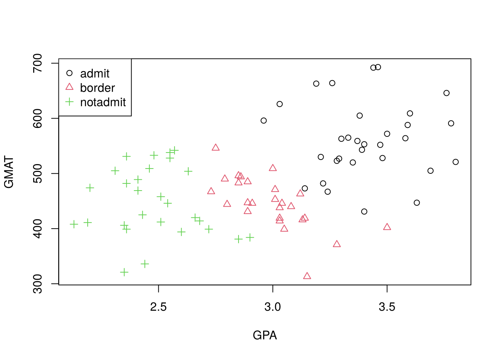
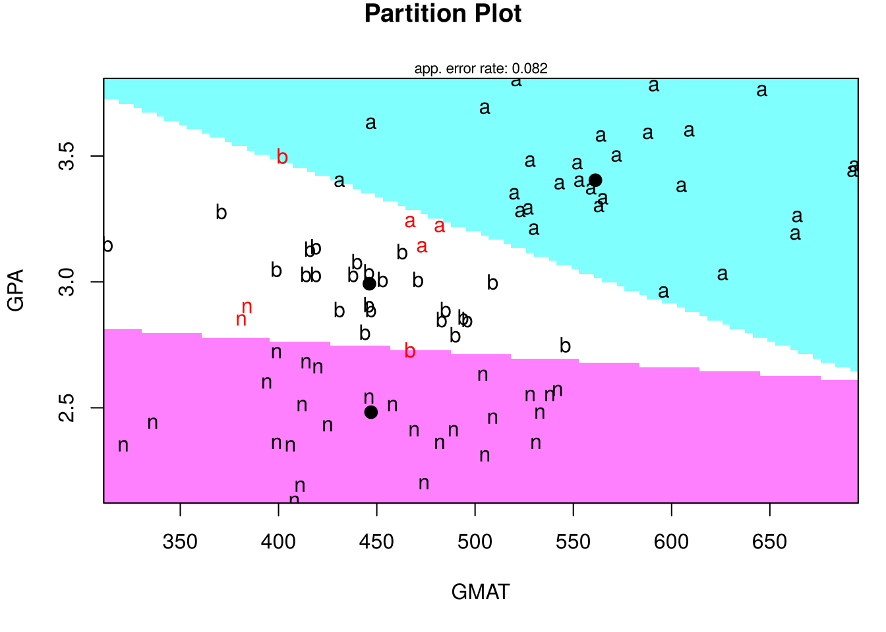
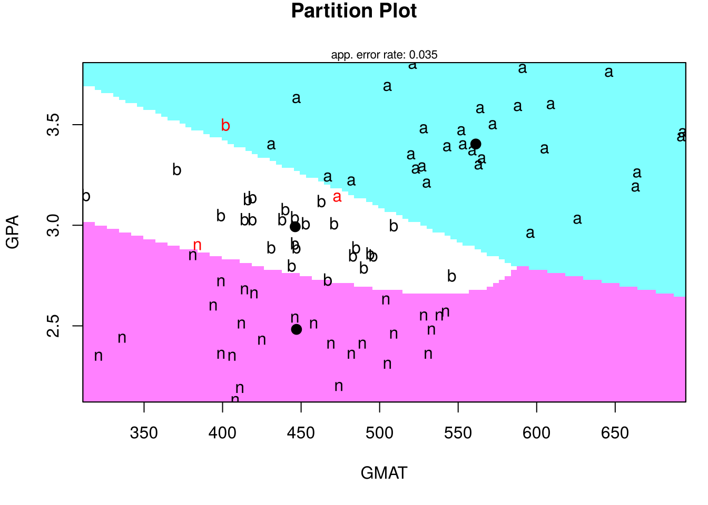
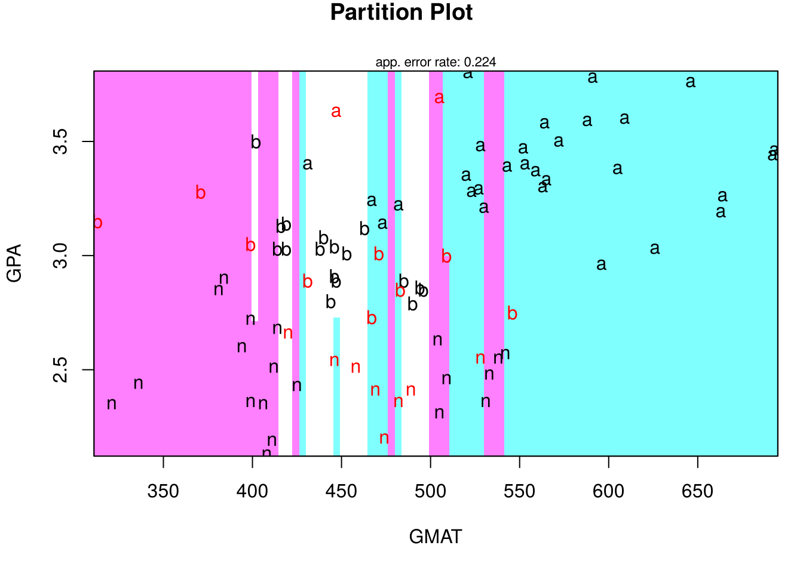
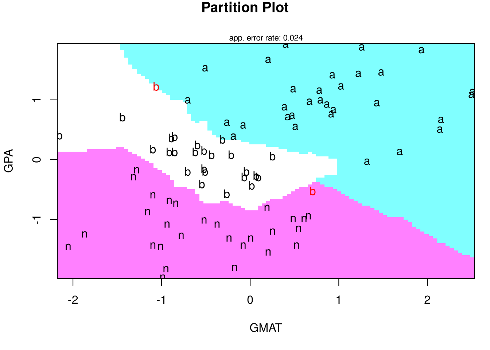
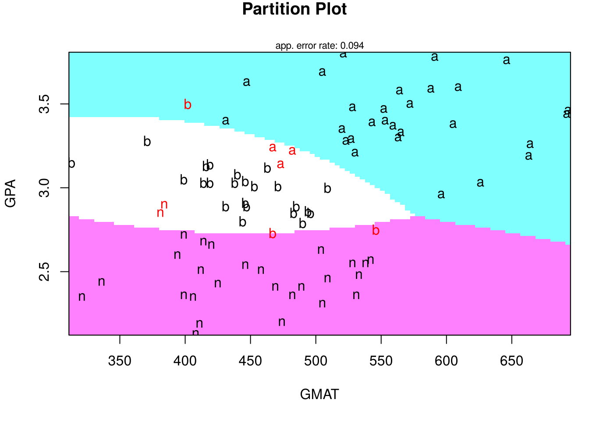

8 判別分析
判別分析における標準的な手法である線形判別 (LDA), 2次判別 (QDA) は,
標準パッケージMASSに含まれている関数lda(), qda()で,
kNN (k近傍法) はパッケージclassに含まれている関数knn()で
実行することができる.
さらに, パッケージklaRを使うと, 2変数ずつの判別境界を可視化したり, ナイーブ・ベイズ法を実行したりできる.
本章の内容は, 授業の R 演習スクリプト R_discrim_dist.R に対応する.
8.1 線形判別・2次判別・kNN法: ビジネススクールの入学許可
手始めに, データセットを学習データ (訓練データ) とテストデータに分けずに, 線形判別, 2次判別, kNN法をデータ全体に当てはめ, その判別結果 (内挿予測) を眺めてみる.
データ1: ビジネススクールの入学許可データ
admission.csv: 85人
- GPA: 学部の成績 (GPA)
- GMAT: GMAT のスコア
- De: 入学審査の結果 (admit: 合格, border: 保留, notadmit: 不合格)
出所: https://rstudio-pubs-static.s3.amazonaws.com/35817_2552e05f1d4e4db8ba87b334101a43da.htmlファイルの先頭2行は説明の行なので, skip = 2 で読み飛ばす.
目的変数 De は因子 (factor) として読み込む必要があるので, stringsAsFactors = TRUE を指定する.
admdat <- read.csv("class/admission.csv", skip = 2, stringsAsFactors = TRUE)
head(admdat)
#> GPA GMAT De
#> 1 2.96 596 admit
#> 2 3.14 473 admit
#> 3 3.22 482 admit
#> 4 3.29 527 admit
#> 5 3.69 505 admit
#> 6 3.46 693 admit
summary(admdat)
#> GPA GMAT De
#> Min. :2.130 Min. :313.0 admit :31
#> 1st Qu.:2.600 1st Qu.:425.0 border :26
#> Median :3.010 Median :482.0 notadmit:28
#> Mean :2.975 Mean :488.4
#> 3rd Qu.:3.300 3rd Qu.:538.0
#> Max. :3.800 Max. :693.0
plot(admdat$GPA, admdat$GMAT, col = admdat$De, pch = as.numeric(admdat$De), xlab = "GPA",
ylab = "GMAT")
legend("topleft", legend = levels(admdat$De), col = 1:3, pch = 1:3)
GPA と GMAT がともに高い志願者ほど合格 (admit) となる傾向がはっきり見て取れる.
線形判別 (LDA)
- モデルの当てはめ
線形判別の実行は, パッケージMASSの関数lda()により行うことができる.
library(MASS)
adm_lda <- lda(De ~ ., data = admdat)
adm_lda # 事前確率, 各群の平均, 判別係数
#> Call:
#> lda(De ~ ., data = admdat)
#>
#> Prior probabilities of groups:
#> admit border notadmit
#> 0.3647059 0.3058824 0.3294118
#>
#> Group means:
#> GPA GMAT
#> admit 3.403871 561.2258
#> border 2.992692 446.2308
#> notadmit 2.482500 447.0714
#>
#> Coefficients of linear discriminants:
#> LD1 LD2
#> GPA 5.008766354 1.87668220
#> GMAT 0.008568593 -0.01445106
#>
#> Proportion of trace:
#> LD1 LD2
#> 0.9673 0.0327adm_ldaの出力には, 各グループ (admit, border, notadmit) の事前確率 (学習データでの割合),
予測変数 (GPA, GMAT) のグループ平均,
線形判別関数の係数などが格納されている.
3群の判別なので, 線形判別関数は2つ (LD1, LD2) ある.
- 判別 (予測)
lda()の出力を関数predict()に入力することで,
判別結果 (class), およびその判断に使用した
事後確率 (posterior) が出力される.
これら (特に前者) が, 判別分析における主要な出力である.
pred_lda <- predict(adm_lda) # 学習に使ったデータ自身の判別 (内挿予測)
names(pred_lda) # class, posterior, x
#> [1] "class" "posterior" "x"
head(pred_lda$class)
#> [1] admit border border admit admit admit
#> Levels: admit border notadmit
head(round(pred_lda$posterior, 3))
#> admit border notadmit
#> 1 0.627 0.368 0.005
#> 2 0.140 0.858 0.002
#> 3 0.407 0.593 0.000
#> 4 0.911 0.089 0.000
#> 5 0.999 0.001 0.000
#> 6 1.000 0.000 0.000判別結果は, 事後確率が最も大きいクラスに割り当てたものである.
新しい志願者 (例えば GPA = 3.21, GMAT = 497) の判別 (外挿予測) は, 引数newdataにデータフレームで与える.
predict(adm_lda, newdata = data.frame(GPA = 3.21, GMAT = 497))
#> $class
#> [1] admit
#> Levels: admit border notadmit
#>
#> $posterior
#> admit border notadmit
#> 1 0.5180421 0.4816015 0.0003563717
#>
#> $x
#> LD1 LD2
#> 1 1.252409 0.318194- 精度評価
判別の精度は, 判別結果と実際の値 (正解) を突き合わせた混同行列や, 正解率で確認することができる.
(tbl_lda <- table(予測 = pred_lda$class, 実績 = admdat$De)) # 混同行列
#> 実績
#> 予測 admit border notadmit
#> admit 28 1 0
#> border 3 24 2
#> notadmit 0 1 26
mean(pred_lda$class == admdat$De) # 正解率
#> [1] 0.9176471ただし, ここでは学習に使ったデータ自身を判別しているので, この正解率は, 新しいデータに対する精度よりも楽観的な値になりやすい (見かけの正解率).
2次判別 (QDA)
2次判別は, パッケージMASSの関数qda()により行うことができる.
操作はlda()と同様である.
adm_qda <- qda(De ~ ., data = admdat)
adm_qda
#> Call:
#> qda(De ~ ., data = admdat)
#>
#> Prior probabilities of groups:
#> admit border notadmit
#> 0.3647059 0.3058824 0.3294118
#>
#> Group means:
#> GPA GMAT
#> admit 3.403871 561.2258
#> border 2.992692 446.2308
#> notadmit 2.482500 447.0714
pred_qda <- predict(adm_qda)
head(round(pred_qda$posterior, 3))
#> admit border notadmit
#> 1 0.983 0.006 0.012
#> 2 0.310 0.688 0.002
#> 3 0.817 0.183 0.001
#> 4 1.000 0.000 0.000
#> 5 1.000 0.000 0.000
#> 6 1.000 0.000 0.000
predict(adm_qda, newdata = data.frame(GPA = 3.21, GMAT = 497))
#> $class
#> [1] admit
#> Levels: admit border notadmit
#>
#> $posterior
#> admit border notadmit
#> 1 0.9226763 0.0768693 0.0004544468
(tbl_qda <- table(予測 = pred_qda$class, 実績 = admdat$De))
#> 実績
#> 予測 admit border notadmit
#> admit 30 1 0
#> border 1 25 1
#> notadmit 0 0 27
mean(pred_qda$class == admdat$De)
#> [1] 0.9647059学習済みモデルのパラメータ推定値は
lda()やqda()の出力に格納されており, これらから
判別関数や判別境界の形を知ることができる.
kNN法
kNN法は, 標準パッケージclassの関数knn()によって実行できる.
kNN法では, 近傍の数\(k\)を与える必要がある.
knn()へのデータの与え方は, lda(), qda()とは異なり,
学習用の予測変数, 判別したいデータの予測変数, 学習用の目的変数 (ラベル) を順に与える.
ここでは, 上と同様に, 学習に使ったデータ自身を判別する (\(k = 5\)).
距離が同じ点が複数ある場合にはランダムに選ばれるので, 結果を再現できるようset.seed()を指定しておく.
library(class)
set.seed(1)
pred_knn <- knn(admdat[, 1:2], admdat[, 1:2], cl = admdat[, 3], k = 5)
(tbl_knn <- table(予測 = pred_knn, 実績 = admdat[, 3]))
#> 実績
#> 予測 admit border notadmit
#> admit 25 2 1
#> border 3 17 7
#> notadmit 3 7 20
mean(pred_knn == admdat[, 3])
#> [1] 0.7294118kNN法は, 点と点の距離に基づいて分類するので, 変数の尺度 (値の範囲) の影響を受ける. この点は, 下の「klaR パッケージによる判別境界の可視化」の節で確認する.
8.2 データの分割・学習・判別・評価: 個人ローンのデフォルト
実際の判別分析においては, まず, データセットを学習データ (訓練データ) とテストデータに分け, 前者でモデルを推定 (学習) し, 後者でモデルの性能を評価する必要がある.
データ2: 個人ローンのデフォルト・データ (仮想)
default.csv: 7,500件 (仮想データ)
- ローン残高: ローン残高 (ドル)
- 収入: 年収 (ドル)
- 職種: A, B
- デフォルト: 1 (デフォルトした), 0 (しなかった)dat <- read.csv("class/default.csv")
head(dat)
#> ローン残高 収入 職種 デフォルト
#> 1 333.02 51282.46 B 0
#> 2 572.73 36924.89 B 0
#> 3 701.65 28501.27 B 0
#> 4 738.21 37395.16 B 0
#> 5 1074.57 12521.48 A 0
#> 6 946.63 30096.83 B 0
nsize <- nrow(dat)
table(dat$デフォルト)
#>
#> 0 1
#> 7250 250デフォルトしたのは7,500件のうち250件 (3.3%) で, 一方のクラスが極端に少ない「不均衡データ」である.
データセットを, 最初の2/3を学習用, 残りの1/3をテスト用に分割する.
(このデータは行の並びに規則性がないので, この分け方で問題ない.
並び順に規則性がある場合は, sample()でランダムに分割する.)
dat_train <- dat[1:round(nsize/3 * 2), ]
dat_test <- dat[(round(nsize/3 * 2) + 1):nsize, ]
c(学習用 = nrow(dat_train), テスト用 = nrow(dat_test))
#> 学習用 テスト用
#> 5000 2500# 代替的方法: ランダムに分割する
set.seed(1)
id_train <- sample(1:nsize, round(nsize/3 * 2))
dat_train <- dat[id_train, ]
dat_test <- dat[-id_train, ]学習済みモデルの性能は, データの分割の仕方に依存してしまう.
そこで, 分割への依存を軽減し, 予測精度の評価の信頼性を高めるために, 交差検証 (クロス・バリデーション) を行うことが推奨される.
関数lda()やqda()は引数CVを持っていて, これをTRUEと設定すると, LOOCV を実行する (デフォルトはFALSE).
LOOCV (Leave-One-Out Cross-Validation)
- 交差検証法の一種. 1個抜き交差検証
- データセットの各データ点を1つずつテスト用データとして取り出し, 残りを学習用データとしてモデルを当てはめ, 取り出した点を予測する.
- これをデータセットの全てのデータ点について繰り返し, モデルの性能を評価する.線形判別
dat_lda <- lda(デフォルト ~ ローン残高 + 収入, data = dat_train)
dat_lda
#> Call:
#> lda(デフォルト ~ ローン残高 + 収入, data = dat_train)
#>
#> Prior probabilities of groups:
#> 0 1
#> 0.969 0.031
#>
#> Group means:
#> ローン残高 収入
#> 0 797.1146 33532.90
#> 1 1728.5119 33559.46
#>
#> Coefficients of linear discriminants:
#> LD1
#> ローン残高 2.241089e-03
#> 収入 1.325058e-05学習済みモデルの性能は, テストデータを判別させ (外挿予測), 実際の値 (正解) と比較することで評価する.
pred_dat_lda <- predict(dat_lda, dat_test)$class
(lda_tab <- table(予測 = pred_dat_lda, 実績 = dat_test$デフォルト))
#> 実績
#> 予測 0 1
#> 0 2399 72
#> 1 6 23
mean(pred_dat_lda == dat_test$デフォルト) # 正解率
#> [1] 0.9688
mean(dat_test$デフォルト == 0) # (比較) 全員を「デフォルトしない」と判別した場合の正解率
#> [1] 0.962正解率は高いが, 全員を「デフォルトしない」と判別するだけでも, 正解率は96.2%になる. 不均衡データでは, 正解率だけでモデルの良し悪しを判断することはできない. 実際にデフォルトした95件のうち, 何件を正しく「デフォルト」と判別できたかなど, 混同行列の中身を見ることが重要である (スライド「分類モデルの評価」を参照).
kNN法
set.seed(1)
pred_knn2 <- knn(dat_train[, c("ローン残高", "収入")], dat_test[, c("ローン残高",
"収入")], cl = dat_train[, "デフォルト"], k = 3)
(tbl_knn2 <- table(予測 = pred_knn2, 実績 = dat_test[, "デフォルト"]))
#> 実績
#> 予測 0 1
#> 0 2388 84
#> 1 17 112つの変数の標準偏差を比べると, 収入の方がローン残高より一桁以上大きい.
このままでは, 点と点の距離はほとんど収入の差だけで決まってしまい, デフォルトとの関係が強いローン残高の情報が kNN法の判別にほとんど生かされない. 距離に基づく手法では, 変数を標準化 (平均0, 標準偏差1) して, 尺度をそろえるのが基本である. 標準化には, 学習データの平均と標準偏差を使う (テストデータの情報を学習に使わないため).
# (参考) 変数を標準化してから kNN法を実行
x_cols <- c("ローン残高", "収入")
mu <- colMeans(dat_train[, x_cols])
s <- apply(dat_train[, x_cols], 2, sd)
train_s <- scale(dat_train[, x_cols], center = mu, scale = s)
test_s <- scale(dat_test[, x_cols], center = mu, scale = s)
set.seed(1)
pred_knn3 <- knn(train_s, test_s, cl = dat_train[, "デフォルト"], k = 3)
table(予測 = pred_knn3, 実績 = dat_test[, "デフォルト"])
#> 実績
#> 予測 0 1
#> 0 2383 65
#> 1 22 30標準化すると, 実際にデフォルトした人をより多く「デフォルト」と判別できるようになる.
8.3 klaR パッケージによる判別境界の可視化
関数partimat()による判別境界の可視化
パッケージklaRの関数partimat()は, 2変数ずつの判別境界を可視化する.
判別分析やそれ以外の多様なクラス分類手法をサポートしている.
- 引数
methodで指定: “lda”, “qda”, “rpart”, “naiveBayes”, “rda”, “sknn”, “svmlight”
入学許可データ (データ1) に適用してみる. 図の中の記号は各志願者の審査結果 (a = admit, b = border, n = notadmit) であり, 赤字は誤って判別された志願者を表す. 図の上の “app. error rate” は, 学習データ自身で評価した誤判別率 (見かけの誤判別率) である.



LDA の判別境界は直線, QDA の判別境界は曲線になる.
kNN法の判別境界は, 縦軸 (GPA) の方向に真っすぐ伸びた「縦じま」になっている. 境界の位置が, 横軸の GMAT の値だけで決まっているということである. これは, GMAT (300〜700程度) の値の範囲が GPA (2〜4程度) よりはるかに大きいため, 点と点の距離がほぼ GMAT の差だけで決まり, GPA がほとんど考慮されていないことを意味する.
変数を標準化 (平均0, 標準偏差1) して, 尺度をそろえてから再実行してみる.
adm2 <- data.frame(GPA = scale(admdat$GPA), GMAT = scale(admdat$GMAT), De = admdat$De)
partimat(De ~ ., data = adm2, method = "sknn") # 単純 kNN 法, 変数標準化後
標準化すると, GPA と GMAT の両方を考慮した判別境界になる.
ナイーブ・ベイズ法
パッケージklaRには, ナイーブ・ベイズ法を実行する関数NaiveBayes()も用意されている.
ナイーブ・ベイズ法は, 各クラスの中で予測変数どうしが独立であると仮定する.
adm_NB <- NaiveBayes(De ~ ., data = admdat) # usekernel = FALSE (デフォルト) → 正規分布
(tbl_nb <- table(予測 = predict(adm_NB)$class, 実績 = admdat$De))
#> 実績
#> 予測 admit border notadmit
#> admit 28 1 0
#> border 3 23 2
#> notadmit 0 2 26関数partimat()において, method = "naiveBayes"と指定してもよい.

(自主課題)
- 入学許可データで, kNN法の\(k\)を変えて (例えば
partimat(De ~ ., data = adm2, method = "sknn", kn = 10)), 判別境界がどう変わるか確かめてみよう. - デフォルト・データで, 2次判別 (
qda()) やナイーブ・ベイズ法を学習データに当てはめ, テストデータに対する混同行列を線形判別の結果と比べてみよう. - デフォルト・データには職種 (A, B) の情報もある. 職種によってデフォルトの起こりやすさは違うか, 調べてみよう.